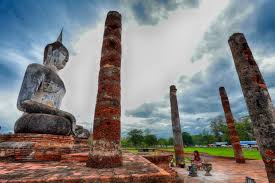

แหล่งท่องเที่ยว
1.อุทยานประวัติศาสตร์สุโขทัย
อุทยานประวัติศาสตร์สุโขทัย หรือ เมืองเก่าสุโขทัย ตั้งอยู่นอกตัวเมืองสุโขทัย ห่างจากศาลากลางจังหวัดสุโขทัยไป ตามทางหลวงหมายเลข 12 สายสุโขทัย-ตาก ไปทางทิศตะวันตกประมาณ 12 กิโลเมตร เมื่อผ่านเข้าเขตเมืองเก่า จะแลเห็นยอดพระเจดีย์แบบต่างๆ อันสง่างามและวิหารอันศักดิ์สิทธิ์ กำแพงเมืองสุโขทัย
ปัจจุบันตั้งอยู่ตำบลเมืองเก่า เป็นรูปสี่เหลี่ยมผืนผ้า เป็นกำแพงพูนดิน 3 ชั้น โดยการขุดเอาดินขึ้นมาถมเป็นกำแพงและพื้นดินที่ขุด ขึ้นยังเป็นคูขังน้ำไว้ ใช้สอยและเป็นกำแพงน้ำขึ้นอีก 2 ชั้น กำแพงด้านทิศเหนือจดทิศใต้ยาว 2,000 เมตร ด้านทิศตะวันตกยาว 1,600 เมตร มีประตูเมือง 4 ประตู ด้านเหนือเรียกว่า "ประตูศาลหลวง" ด้านใต้เรียกว่า "ประตูนะโม" ด้านทิศตะวันออกเรียกว่า "ประตูกำแพงหัก" ด้านทิศ ตะวันตกเรียกว่า "ประตูอ้อ" ภายนอกกำแพงเมืองในรัศมี 5 กิโลเมตร มีโบราณสถานประมาณ 70 แห่ง สร้างขึ้นไว้ในพุทธศาสนาและศาสนาพราหมณ์ ได้รับการบูรณะซ่อมแซมโดยกรมศิลปากร และได้รับการจัดตั้งให้เป็นมรดกโลกโดยองค์การ UNESCO ในปี 2537
ตั้งอยู่ที่ตำบลเมืองเก่า อำเภอเมือง จังหวัดสุโขทัย สถานที่ซึ่งถูกยกให้เป็นมรดกโลก เป็นอุทยานที่ถ่ายทอดความรุ่งเรื่องของสุโขทัยในอดีตได้ดีที่สุด สิ่งก่อสร้างต่างๆของล้วนแสดงให้เห็นถึงความยิ่งใหญ่ของอาญาจักรแห่งนี้ที่เคยเป็นศูนย์กลางการปกครอง ศาสนา และเศรษฐกิจของชาวสยาม ในอุทยานมีความกว้างประมาณ 1.6 กิโลเมตร ครอบคลุมพื้นที่ 70 ตารางกิโลเมตร ประกอบไปด้วย พระราชวัง ศาสนสถาน โบราณสถาน และมีคูเมือง กำแพงเมือง กับประตูเมืองล้อมรอบอยู่ในรูปสี่เหลี่ยม สถานที่สำคัญของที่นี่คือ วัดมหาธาตุ วัดที่ใหญ่ที่สุดในอุทยานประวัติศาสตร์สุโขทัย ปัจจุบันที่นี่เป็นแหล่งท่องเที่ยวยอดนิยมมีผู้เข้าเยี่ยมชมหลายแสนคนต่อปี สามารถทำได้ทั้งเดินเท้าหรือขี่จักรยานเที่ยวช
2.พิพิธภัณฑสถานแห่งชาติสวรรควรนายกสุโขทัย
พิพิธีภันฑสถานแห่งชาติ สวรรควรนายก เป็นพิพิธภัณฑสถานแห่งชาติที่ก่อกำเนินขึ้นตามเจตนารมณ์ของ พระสวรรควรนายก (ทองคำ จิตรธร) อดีตเจ้าอาวาสวัดสวรรคาราม (วัดกลาง) และเจ้าคณะจังหวัดสุโขทัย ซึ่งท่านมีความสนใจในการศึกษาและอนุรักษ์มรดกศิลปวัฒนธรรม และได้สะสมโบราณศิลปวัตถุไว้จำนวนมาก กับทั้งได้แสดงเจนนารมณ์ว่าเมื่อมรณภาพแล้ว ให้ยกทรัพย์สินที่สะสมไว้เป็นสมบัติของชาติ โดยขอให้กรมศิลปากรจัดตั้งพิพิธภัณฑสถานขึ้นภายในวัดสวรรคาราม
ในพุทธศักราช 2524 กรมศิลปากรได้รับมอบโบราณวัตถุ จากวัดสวรรคารามและได้นำมาจัดแสดง รวมทั้งได้เคลื่อนย้ายโบราณวัตถุจำนวนหนึ่งจากพิพิธภัณฑสถานแห่งชาติ รามคำแหง โบราณวัตถุที่ได้จากการสำรวจ ขุดค้นและขุดแต่งทางโบราณคดีในบริเวณเมืองศรีสัชนาลัย โบราณวัตถุประเภทเครื่องถ้วยสังคโลกที่กรมศิลปากร ได้จากแหล่งเรืออับปางในอ่าวไทย บริเวณอ่าวสัตหีบ ใกล้เการะคราม รวมทั้งโบราณวัตถุที่ประชาชอนมอบให้ นำมาจัดแสดงไว้ด้วยกัน เพื่อแสดงให้เห็นถึงหลักฐานแห่งความเจริญรุ่งเรืองของบ้านเมืองที่สืบเนื่องมาแต่อดึตกาล
ปัจจุบันตั้งอยู่ที่ตำบลวังไม้ขอน หลังวัดสวรรคาราม หรือ วัดกลาง อำเภอสวรรคโลก เป็นพิพิธภัณฑ์จัดแสดงศิลปโบราณวัตถุส่วนใหญ่ที่เป็นมรดกของพระสวรรควร นายกเจ้าคณะจังหวัดและเจ้าอาวาสวัดสวรรคาราม ตั้งเป็นพิพิธภัณฑ์ในวัดหลังพระสวรรควรนายกมรณภาพเมื่อพ.ศ. 2508 แบ่งเป็น 2 ส่วน คือ ชั้นบน จัดแสดงประติมากรรมสมัยต่างๆจากวัดสวรรควรนายกของพระสวรรควรนายก และบางส่วนจากพิพิธภัณฑสถานแห่งชาติรามคำแหง อาทิ พระพุทธรูปในยุคสมัยต่างๆเป็นศิลปะตั้งแต่ยุคสุโขทัยจนถึงรัตนโกสินทร์ตอนต้น ขณะที่ชั้นล่าง จัดแสดงเครื่องถ้วยสังคโลกที่ขุดพบในแหล่งโบราณคดีบ้านเกาะน้อยและบ้านป่ายาง โดย เครื่องสังคโลก คือ ของฝาก ขึ้นชื่อของสุโขทัย
3.อุทยานประวัติศาสตร์ศรีสัชนาลัย
อุทยานประวัติศาสตร์ศรีสัชนาลัย เป็นอุทยานประวัติศาสตร์ของประเทศไทย ตั้งอยู่ที่ตำบลศรีสัชนาลัย อำเภอศรีสัชนาลัย จังหวัดสุโขทัย มีโบราณสถานทั้งหมด 283 แห่ง สำรวจค้นพบแล้ว 204 แห่ง รวมทั้งสุสานวัดชมชื่นและเตาสังคโลกโบราณ
ในปัจจุบันจากการประเมินของกรมศิลปากร นับว่ามีการต่อเติมโบราณสถานจากสภาพเดิมน้อยกว่าที่ใด ยังคงรักษาภูมิทัศน์ของเมืองประวัติศาสตร์ไว้ได้ครบถ้วน เมื่อวันที่ 12 ธันวาคม พ.ศ. 2534 อุทยานประวัติศาสตร์ศรีสัชนาลัย พร้อมด้วยอุทยานประวัติศาสตร์สุโขทัยและอุทยานประวัติศาสตร์กำแพงเพชร ได้รับเกียรติให้ลงทะเบียนเป็นมรดกโลกจากยูเนสโกภายใต้ชื่อว่า "เมืองประวัติศาสตร์สุโขทัยและเมืองบริวาร"
ปัจจุบัน ตั้งอยู่ที่อำเภอศรีสัชนาลัย จังหวัดสุโขทัย อีกจุดของจังหวัดสุโขทัยที่ได้ประกาศขึ้นทะเบียนเป็นมรดกโลก โบราณสถานแห่งนี้ได้รับการบูรณปฏิสังขรณ์โดยกรมศิลปากรด้วยความช่วยเหลือจากองค์การยูเนสโก ในส่วนของตำบลศรีสัชนาลัย สมัยโบราณมีชื่อว่า เมืองเชลียง เคยเป็นศูนย์กลางการปกครองในสมัยกษัตริย์ราชวงศ์พระร่วงขึ้นครองอำนาจในสุโขทัย ภายในอุทยานมีโบราณสถาน และโบราณวัตถุมากถึง 215 แห่ง
4.ถ้ำเจ้าราม
ถ้ำเจ้าราม อยู่ในเขตอุทยานแห่งชาติศรีสัชนาลัย ณ บริเวณหน่วยพิทักษ์เขตห้ามล่าสัตว์ป่าวังตะเคียน เขตป่าสงวนแห่งชาติ แม่มอก-แม่ลำพัน หมู่ที่ 15 ตำบลวังน้ำขาว อยู่ห่างจากอำเภอบ้านด่านลานหอยไปทางทิศเหนือประมาณ 30 กิโลเมตร
ชาวบ้านเชื่อกันว่าในระหว่างการเข้าชมถ้ำเจ้าราม ไม่สมควรพูดจาหยาบคายหรือลบหลู่ และมิควรกระทำมิดีเพราะจะเกิดสิ่งที่ไม่คาดคิดต่าง ๆ ได้ เช่น มูลค้างคาว ซึ่งมีค่ามหาศาลทำให้เกิดความโลภของมนุษย์ จนเกิดเพทภัยถึงแก่ชีวิตมาแล้วหลายคน
จากการบอกเล่าของชาวบ้านมีผู้ที่เคยเข้าไปสำรวจภายในถ้ำเจ้าราม พบว่ามีลักษณะแคบบ้างกว้างบ้างและยาวมาก กล่าวว่าท้ายถ้ำยาวไปถึงจังหวัดลำปาง สังเกตจากมูลค้างคาวถูกไฟไหม้ที่ปากถ้ำ แต่มีควันไฟไปออกที่ปลายถ้ำ ซึ่งเป็นบริเวณติดต่อดังกล่าว ภายในถ้ำมีสระน้ำขนาดใหญ่ และเคยมีผู้พบพระพุทธรูปสมัยเก่าหลายองค์ในน้ำ
ปัจจุบัน ถ้ำเจ้าราม เป็นสถานที่ท่องเที่ยวทางธรรมชาติของจังหวัดสุโขทัยที่หลายคนไม่ค่อยรู้จัก มีความเก่าแก่พอสมควร ตั้งอยู่ในพื้นที่ของเขตรักษาพันธุ์สัตว์ป่าถ้ำเจ้าราม ในอำเภอบ้านด่านลานหอย ในถ้ำจะมีค้างคาวปากย่น หรือ หน้าย่น มากมาย เวลาพวกมันบินออกจากถ้ำจะมีฝูงเหยี่ยวมาโฉบล่าเหยื่อ ที่นี่อนุญาตให้นักท่องเที่ยวสามารถนำเต้นท์มากางนอนค้างเพื่อชมฝูงค้างคาวและธรรมชาติอันสวยงามได้
5.ชุมชนบ้านไม้โบราณคีรีมาศ
อีกหนึ่งสถาน ที่เที่ยวสุโขทัย เชิงวัฒนธรรมที่น่าสนใจ โดยชุมชนแห่งนี้เป็นชุมชนโบราณของจังหวัดที่ชาวบ้านยังคงรักษาขนมธรรมเนียมประเพณีและวัฒนธรรมท้องถิ่นที่หาชมได้ยากเอาไว้เป็นอย่างดี เช่นเดียวกับ วัด อาคาร และบ้านเรือน ที่มีสถาปัตยกรรมเป็นทรงเก่าแก่ เป็นเอกลักษณ์ไม่เหมือนที่ไหน
